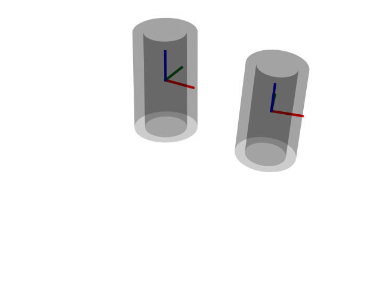

Note
Click here to download the full example code
Plot Transformed Cylinders¶
Plots surfaces of transformed cylindrical shells.
print(__doc__)
import numpy as np
import matplotlib.pyplot as plt
from pytransform3d.transformations import transform_from, plot_transform
from pytransform3d.rotations import random_axis_angle, matrix_from_axis_angle
from pytransform3d.plot_utils import plot_cylinder, remove_frame
random_state = np.random.RandomState(42)
A2B = transform_from(
R=matrix_from_axis_angle(random_axis_angle(random_state)),
p=random_state.randn(3))
ax = plot_cylinder(length=1.0, radius=0.3, thickness=0.1,
wireframe=False, alpha=0.2)
plot_transform(ax=ax, A2B=np.eye(4), s=0.3, lw=3)
plot_cylinder(ax=ax, length=1.0, radius=0.3, thickness=0.1, A2B=A2B,
wireframe=False, alpha=0.2)
plot_transform(ax=ax, A2B=A2B, s=0.3, lw=3)
remove_frame(ax)
ax.set_xlim((0, 1.5))
ax.set_ylim((-1.5, 0))
ax.set_zlim((-0.8, 0.7))
plt.show()
Total running time of the script: ( 0 minutes 0.071 seconds)